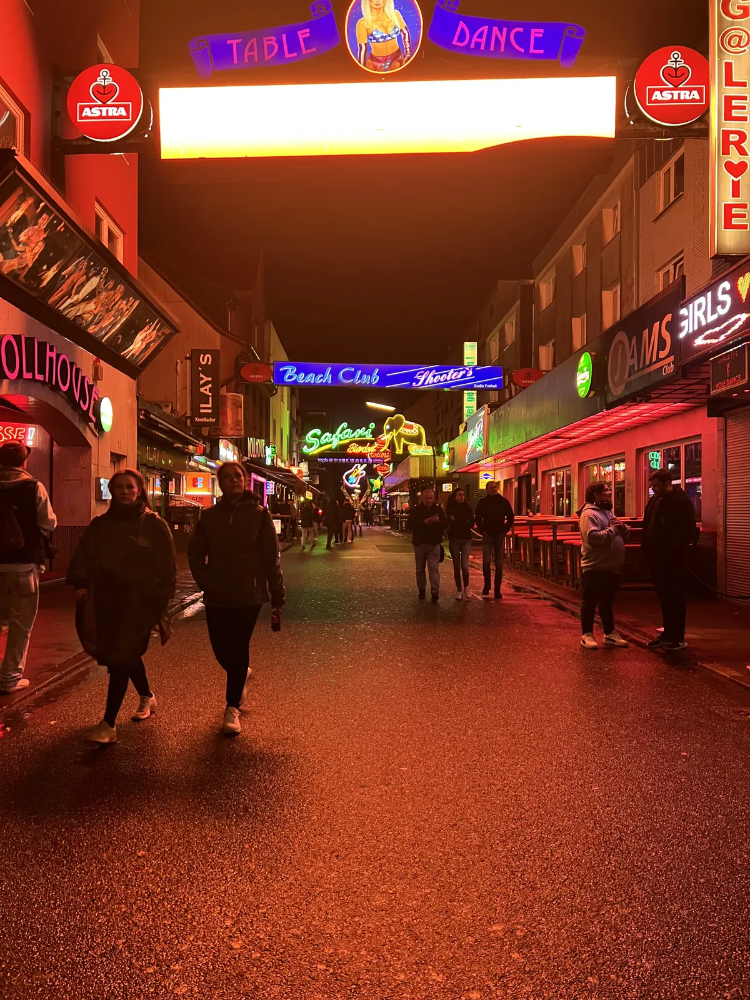
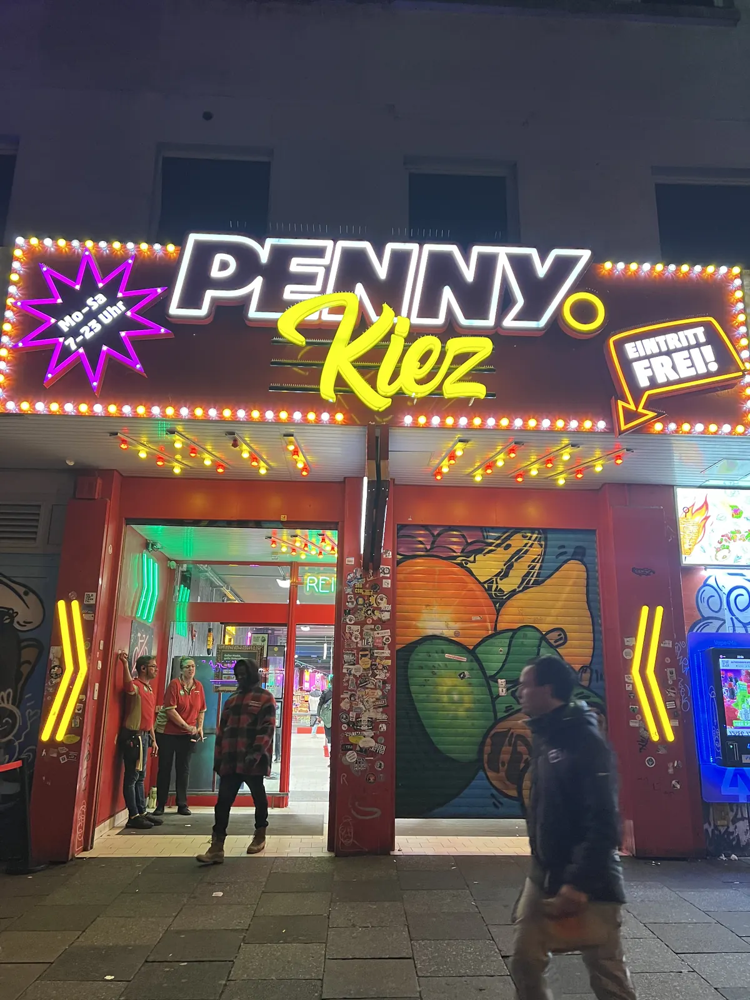
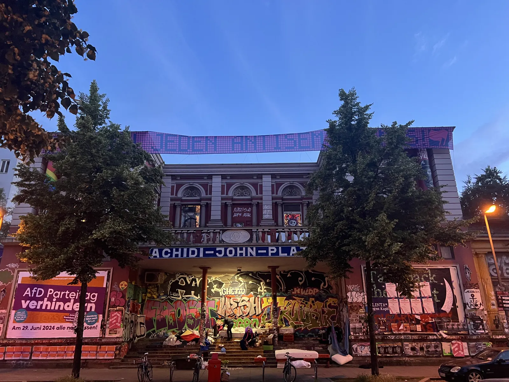
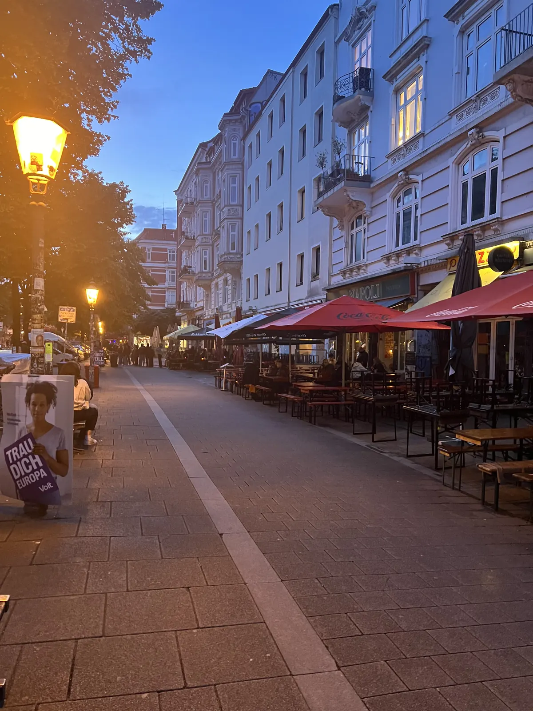

🇩🇪 Hamburg Guide: 13 Orte – Fischmarkt, Hafen, Speicherstadt & Hidden Gems

Inhaltsverzeichnis
Der Norden ist für mich raue Luft, Backstein und Fischbrötchen. Preise und Zeiten sind Richtwerte (Stand 2026).
🗺️ Karte: 10 Orte auf einen Blick
Meine Story in Hamburg
Ich war in Hamburg, Bremen, Lübeck und Rügen – und jede Ecke erzählt von der Zeit, als hier die mächtigsten Kaufleute Europas saßen. Mein Tipp für Hamburg: sonntags ganz früh zum Fischmarkt, danach mit der HADAG-Fähre ab den Landungsbrücken – Hafenrundfahrt zum Nahverkehrstarif. Abends auf die Plaza der Elbphilharmonie.
Dieser Guide enthält Werbe-Links (GetYourGuide, Omio). Wenn du darüber buchst, bekomme ich eine kleine Provision – du zahlst keinen Cent mehr. Preise und Öffnungszeiten ändern sich – vor dem Besuch kurz prüfen.
🆓 Kostenlos erleben
7 Orte in Hamburg, die du ohne Eintritt oder komplett gratis erleben kannst (bei manchen kostet nur ein Teil, z. B. Turm oder Museum):
Auf einen Blick
So kommst du hin und herum
Hamburg erreichst du per ICE, Flug oder Fernbus. In der Stadt fahren S-Bahn, U-Bahn und die HADAG-Fähren im Nahverkehrstarif.
Hamburg liegt gut angebunden: Der Hauptbahnhof ist Knotenpunkt für ICE, Regionalverkehr und S-Bahn, der Flughafen ist per S-Bahn in rund 25 Minuten erreichbar (Fahrpläne vorher prüfen). In der Stadt nutzt du den HVV mit U-Bahn, S-Bahn, Bus und Fähren; eine Tageskarte lohnt sich.
Die Altstadt, Speicherstadt und HafenCity sind gut zu Fuß erkundbar. Für St. Pauli, Altona und Blankenese nimmst du die Bahn.
1. Must-Sees
Fischmarkt am Sonntagmorgen🆓 Kostenlos erlebbar
Sonntags ganz früh zum Altonaer Fischmarkt.
Der Altonaer Fischmarkt findet sonntags in den frühen Morgenstunden statt: Händler rufen ihre Ware aus – Fisch, Obst, Blumen, Käse, Süßes –, und die berühmten „Aale-Dieter“ preisen lautstark Aal und Körbe voller Waren an. In der Fischauktionshalle gibt es Livemusik und Frühstück; nach der Partynacht kommen hier Nachtschwärmer und Frühaufsteher zusammen.
Im Sommer beginnt der Markt gegen 5 Uhr und endet gegen 9:30 Uhr, im Winter öffnet er später (Zeiten vorher prüfen). Komm früh, nimm Bargeld mit und probiere ein Fischbrötchen oder Backfisch.
Tipp: Komm vor 7 Uhr und frühstücke in der Fischauktionshalle.
HADAG-Fähre ab Landungsbrücken
Hafenrundfahrt zum Nahverkehrstarif.
Die HADAG-Fähren gehören zum Hamburger Nahverkehr und fahren auf der Elbe – du bezahlst den normalen HVV-Tarif und bekommst eine Hafenrundfahrt gratis dazu. Die Linie 62 führt von den Landungsbrücken vorbei an Containerterminals, Werften, dem Fischmarkt und Övelgönne bis nach Finkenwerder. Von Deck siehst du Elbphilharmonie, Hafenkräne und große Containerschiffe.
Am schönsten ist die Fahrt am späten Nachmittag oder bei Sonnenuntergang. Nimm eine Jacke mit – auf dem Wasser weht es. Fahrpläne und Tarife vorher prüfen.
Tipp: Setz dich auf das Außendeck und fahr im Abendlicht.
Elbphilharmonie Plaza🆓 Kostenlos erlebbar
Abends der 360°-Blick auf Hafen und Stadt. Für die Plaza brauchst du ein kostenloses Ticket; vorab Infos prüfen.
Die Elbphilharmonie wurde 2017 eröffnet und steht auf einem alten Kaispeicher. Die Plaza liegt auf 37 Metern Höhe und bietet eine Außenpromenade rund um das Gebäude mit Blick auf Hafen, Stadt und Elbe. Der Zugang ist kostenlos, aber mit einem Ticket verbunden, das du online oder vor Ort holst (aktuelle Bedingungen vorher prüfen).
Eine lange gebogene Rolltreppe führt hinauf. Komm am Abend zum Sonnenuntergang und bleib bis zur Dunkelheit – dann leuchten die Lichter des Hafens. Konzerte im Großen Saal sind begehrt; wer Tickets möchte, sollte lange im Voraus planen.
Tipp: Hol dir das Plaza-Ticket früh und komm zum Sonnenuntergang.
St. Michaelis (Michel) & Turmaussicht
Der „Michel“ ist das Wahrzeichen Hamburgs: eine barocke Hauptkirche mit einem rund 132 Meter hohen Turm und einer grünen Kupferkuppel. Du kannst mit dem Aufzug oder über Treppen auf die Aussichtsplattform fahren und den Hafen, die Speicherstadt und die Elbe aus der Vogelperspektive sehen. Unter der Kirche liegt eine Krypta.
Eintritt und Öffnungszeiten ändern sich (vorher prüfen). Komm am Vormittag, wenn das Licht klar ist.
Tipp: Fahr mit dem Aufzug hoch und plane den Besuch am klaren Vormittag.
Reeperbahn, St. Pauli & Beatles-Platz🆓 Kostenlos erlebbar
Die Reeperbahn ist Hamburgs berühmte Vergnügungsmeile: Clubs, Bars, Theater, Spielhallen und Imbisse. Hier begann die Karriere der Beatles, deren Spuren du am Beatles-Platz und in den Seitenstraßen findest (Große Freiheit). Tagsüber wirkt das Viertel ruhig, abends füllt es sich.
Behalte Taschen und Handy im Blick, meide Lockangebote und geh abends nicht allein in dunkle Gassen. Für ein Bier gibt es viele Kneipen; viele Clubs öffnen erst spät.
Tipp: Komm abends, behalte Wertsachen im Blick und meide Lockangebote.

Alster, Jungfernstieg & Rathaus
Die Alster ist der Stausee mitten in der Stadt: Rund um die Binnenalster ziehen sich Promenaden, Arkaden und der Jungfernstieg; die Außenalster ist ein Revier für Segler, Ruderer und Alsterdampfer. Das Rathaus am Rathausmarkt ist ein Neorenaissancebau mit prächtigem Innenraum; Führungen sind möglich (Zeiten vorher prüfen).
Eine Alsterrundfahrt dauert etwa eine Stunde. Spaziere an einem sonnigen Tag um die Außenalster – gut sechs bis sieben Kilometer.
Tipp: Geh um die Außenalster und mach am Wasser Pause.
2. Hidden Gems
Speicherstadt💎 Hidden Gem
Das größte historische Lagerhausviertel der Welt, seit 2015 UNESCO-Welterbe.
Die Speicherstadt ist ein Viertel aus roten Backsteinspeichern aus dem späten 19. Jahrhundert, gebaut auf Eichenpfählen in der Elbe, und gehört seit 2015 zum UNESCO-Welterbe. Sie war das Zentrum des Handels mit Kaffee, Tee, Gewürzen und Teppichen, und noch heute lagern in ihr Teppiche und Rohstoffe. Zwischen den Fleeten gibt es Brücken, Tore und Türme.
Am schönsten ist sie am Abend, wenn die Gebäude angestrahlt werden und sich im Wasser spiegeln. Hier liegen auch das Miniatur Wunderland und das Hamburg Dungeon. Ein Spaziergang dauert rund eine Stunde; Fotografen kommen zur Blauen Stunde.
Tipp: Komm zur Blauen Stunde und geh am Wasserschloss vorbei.
Alter Elbtunnel – zu Fuß unter der Elbe💎 Hidden Gem🆓 Kostenlos erlebbar
Der Alte Elbtunnel von 1911 ist ein Fußgängertunnel unter der Elbe, rund 426 Meter lang und mit Fliesen verkleidet. Du fährst mit Aufzügen hinunter und gehst durch den Tunnel zur anderen Seite – dort wartet einer der schönsten Blicke auf die Hamburger Skyline vom Steinwerder-Ufer.
Der Tunnel ist kostenlos zu Fuß nutzbar (Fahrzeuge zahlen). Plane eine Stunde ein und geh am Abend, wenn die Lichter angehen.
Tipp: Geh am Abend durch den Tunnel und fotografiere die Skyline von drüben.
Blankenese – Treppenviertel & Elbstrand💎 Hidden Gem🆓 Kostenlos erlebbar
Blankenese ist ein früheres Fischerdorf im Westen Hamburgs, an einem steilen Elbhang gelegen. Rund 5.000 Stufen und enge Gassen verbinden die Häuser; es gibt viele Treppenwege, Villen und Ausblicke auf die Elbe. Am Elbstrand liegt der Sand, auf dem Schiffe nah vorbeifahren.
Du erreichst Blankenese mit der S-Bahn; geh durch das Treppenviertel hinunter zum Strand und iss ein Eis am Wasser. Ein Spaziergang dauert zwei bis drei Stunden.
Tipp: Fahr mit der S-Bahn und laufe das Treppenviertel hinunter zum Strand.
Planten un Blomen & Wasserlichtkonzerte💎 Hidden Gem🆓 Kostenlos erlebbar
Planten un Blomen ist ein großer Park im Zentrum mit Gärten, Teichen, Japangarten und Rosen. Im Sommer finden abends Wasserlichtkonzerte statt: Fontänen tanzen zu Musik, bunt beleuchtet. Der Eintritt zum Park ist kostenlos.
Ein Spaziergang eignet sich gut für eine Pause zwischen Museen und Hafen. Prüfe die Zeiten der Wasserlichtkonzerte vorher.
Tipp: Komm an einem Sommerabend zu den Wasserlichtkonzerten.
Miniatur Wunderland
Das Miniatur Wunderland in der Speicherstadt ist die größte Modelleisenbahn der Welt: Hunderte Züge, Flughäfen, Städte, Landschaften und winzige Menschen auf großer Fläche, alles mit Licht- und Tageszeiteffekten. Auch ohne Eisenbahnbegeisterung ist es ein Erlebnis.
Tickets solltest du im Voraus online buchen, besonders in den Ferien und am Wochenende; die Wartezeiten können lang sein. Plane zwei bis drei Stunden ein.
Tipp: Buche Tickets online und komm früh am Morgen.
Hamburger Küche: Fischbrötchen, Labskaus & Franzbrötchen
Ein Fischbrötchen mit Matjes, Backfisch oder Krabben gehört zu Hamburg wie der Hafen. Als Hauptgericht gilt Labskaus: Corned Beef, Rote Bete, Kartoffelpüree und Spiegelei – ein Seemannsgericht. Und als Gebäck das Franzbrötchen: ein zimtgefülltes Hörnchen, das Hamburger lieben.
Probiere Fischbrötchen an den Landungsbrücken oder im Portugiesenviertel; die Preise liegen meist im einstelligen Eurobereich. Frag nach saisonalen Gerichten wie Finkenwerder Scholle.
Tipp: Iss ein Fischbrötchen am Hafen und ein Franzbrötchen zum Kaffee.
Schanzenviertel – Schulterblatt & Rote Flora🆓 Kostenlos erlebbar
Das Szeneviertel rund um die Straße Schulterblatt und das ehemalige Theater Rote Flora: Cafés mit Tischen auf dem Gehweg, Street-Art, kleine Läden, Imbisse aus aller Welt und abends volle Bars. Entspannter als die Reeperbahn – und nur rund 15 Minuten zu Fuß entfernt.
Morgens ist das Viertel ruhig und ideal zum Frühstücken, ab dem späten Nachmittag füllen sich die Plätze. Samstags lohnt der Flohmarkt Flohschanze am Neuen Kamp.
Tipp: S-Bahn/U-Bahn bis Sternschanze – von dort zwei Minuten zum Schulterblatt.


Was den Norden ausmacht
Ein „Moin“ reicht zu jeder Tageszeit. Im Mittelalter beherrschte die Hanse den Handel in Nord- und Ostsee. Die Häuser sind aus rotem Backstein, das Wetter wechselt im Stundentakt.
📍 Diesen Guide in Google Maps speichern
1. Schnell: Route öffnen
2. Dauerhaft: als eigene Karte (2 Minuten)
- Lade die Datei mit allen Pins herunter (KML-Button unten).
- Öffne Google My Maps → „Neue Karte erstellen“ → „Importieren“ → Datei auswählen.
- Fertig – alle Orte stehen exakt an der richtigen Stelle, mit Nummer, Tipp und Link zum Guide.
- In der Google-Maps-App findest du die Karte unter „Gespeichert“ → „Karten“, auch unterwegs.
⬇️ Alle Pins für Google Maps (KML) ⬇️ Ortsliste herunterladen (CSV)
3. Einzeln speichern
Dein Plan
Tag 1: Ein Wochenende in Hamburg
- Sonntag früh – Fischmarkt und Frühstück in der Fischauktionshalle
- Vormittag – HADAG-Fähre ab Landungsbrücken, Alter Elbtunnel
- Mittag – Fischbrötchen, Speicherstadt, Miniatur Wunderland
- Nachmittag – St. Michaelis oder Alster
- Abend – Elbphilharmonie Plaza zum Sonnenuntergang, Reeperbahn
Häufige Fragen
Wann ist der Fischmarkt?
Sonntags ganz früh; Zeiten vorher prüfen.
Wie viele Tage braucht man in Hamburg?
Lohnt die Hamburg Card?
🗺️ Alle Orte auf meiner Karte → Mehr Guides und Reels auf Instagram: @hiddengem.atlas
Guide teilen: Per WhatsApp